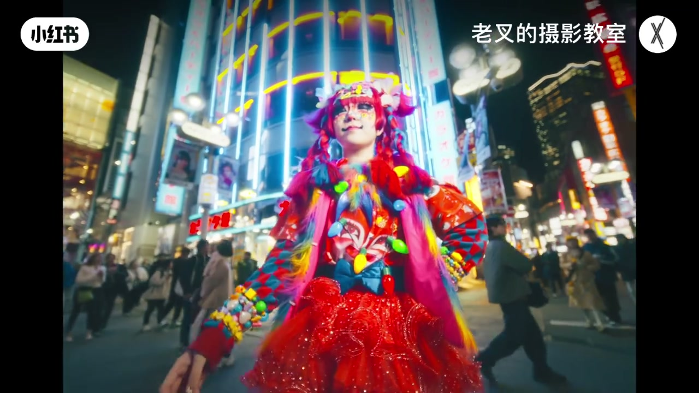
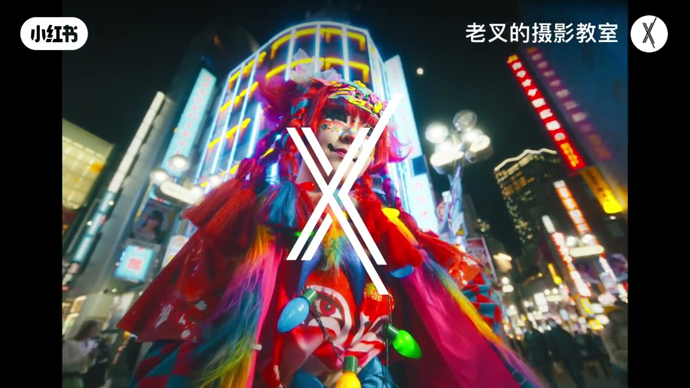

内容要点
本条约 13 秒，Whisper 无有效口播分段。画面是都市霓虹夜景下的高饱和装饰风人像：近景脸部饰品与红发、仰拍全身彩灯造型，并以斜线分屏展示调色前后。据标题「夜景人像怎么调」与分屏对比，可观察的是夜景中主体与霓虹的反差、饱和与肤色/妆面可读性；具体节点参数视频未口述，实录只据可见画面整理。
知识结构
[00:00→00:05]
近景定调
夜景虚化霓虹前，红发与彩色饰品近景；高饱和妆造已成立。
[00:05→00:10]
仰拍全身
低机位彩灯服装+街景霓虹；主体从环境灯光中分离。
[00:10→00:13]
斜线前后
白斜线分屏：一侧更平/偏冷，一侧对比与霓虹更跳。
总结
短片用前后对比展示夜景人像「调完更跳」：主体妆造与霓虹分离、对比与饱和抬升。无口播步骤；练习时需自控肤色与高饱和饰品，避免整幅溢色。
00:00-00:13画面驱动：夜景人像近景→仰拍→分屏对比
ASR 无有效分段，内容据标题、meta 与截帧整理。片长约 13 秒，属视觉型短视频。
前段为夜景街道虚化光斑前的近景人像：红发、大量彩色发夹与贴饰、高饱和妆面，背景霓虹焦外成斑。中段切低机位仰拍全身：服装挂彩色灯泡装饰，身后是密集霓虹招牌与行人虚影，主体从复杂灯光环境中被推到前景。
末段出现白色斜线分屏：一侧相对更平或偏冷青，另一侧对比更强、霓虹与服装颜色更跳——符合「调色前后」展示，而非逐步口播教程。标题「夜景人像怎么调」提示主题是夜景人像观感，但本条未给出可复述的节点步骤；若要复现，需结合作者其他夜景/饱和度专题自行推导，并以本片分屏为观感参考。
[00:04] 夜景近景：红发与彩色饰品，背景霓虹虚化光斑
Night close-up: red hair and color props; neon bokeh behind.

[00:08] 低机位仰拍：彩灯服装主体嵌入霓虹街景
Low-angle upshot: lit costume subject set in neon street.

[00:11] 白斜线分屏：一侧更平/偏冷，一侧对比与霓虹更跳
Diagonal split: flatter/cooler vs punchier contrast and neon.
完整转录（0段）
以下文本由 Whisper medium 模型自动转录，可能存在少量识别误差，已尽可能修正。